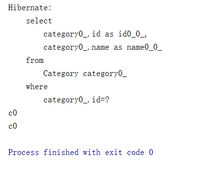

本文主要介绍Hibernate的性能优化方式，最后总结一下Hibernate。
第六十四课. 1+N问题
重置上一节中数据库的数据，然后我们插入一些数据：
运行：
可以看到，这一次我们每一个版块中插入一条数据。
接下来我们写一个测试程序，用来往出取数据：
执行：
发现除了发出一个在Topic表中进行查询的sql语句之外，还另外发出了十条查询category表的sql语句。我们本来期望只发出第一条语句，这就是1+N问题。原因就是在Topic类中的ManyToOne默认设置是fetch为Eager的，所以会将与其关联的category都取出来。
这个问题怎么解决呢？
- @ManyToOne(fetch=FetchType.LAZY)
- BatchSize(本例就是在Category类上面加一条注解：@BatchSize(size = 5))：
运行：
这样就将原来十条sql合并成了两条，提高了效率。
- join fetch
@Test
public void testQuery4() {
Session session = sf.openSession();
session.beginTransaction();
// List
List
for(Topic t : topics) {
System.out.println(t.getId() + "-" + t.getTitle());
}
session.getTransaction().commit();
session.close();
}
这样也可以解决1+N问题。
第六十五课. list-iterate
list和iterate不同之处（//主要为了面试 详见hibernate_2900_Hibernate_list_iterate）
a) list取所有
b) iterate先取 ID,等用到的时候再根据ID来取对象
c) session中list第二次发出，仍会到数据库査询
d) iterate 第二次，首先找session 级缓存
第六十六课. 一级缓存-二级缓存-查询缓存
先来研究一级缓存：
运行：

发现只发出一次sql查询，由于第二次取的是相同的数据，而且第一次已经存入到一级缓存中，所以第二次没有去数据库去取，而是直接到一级缓存去取。
下面我们研究session：
运行：
发现一个session的不能去另外一个session中取数据。
现在我们试图打开二级缓存，让两个session可以使用相同的缓存。
i. hibernate.cfg.xml 设定：
ii. @Cache注解(由hibernate扩展提供)
在Category.java里加上：@Cache(usage=CacheConcurrencyStrategy.READ_WRITE)
然后我们加入需要的jar包（ehcache-1.2.3.jar及commons-logging-1.0.4.jar包）：
运行：
发现hibernate这一次只发了一次sql，说明二级缓存已经打开，所以两个session可以共用缓存。
总结：
- 一级缓存和二级缓存和査询缓存（面试题）(详见hibernate_3000_Hibernate_3KindsOf_Cache)
a) 什么是缓存
b) 什么是一级缓存，session级别的缓存
c) 什么是二级缓存，SessionFactory级别的缓存，可以跨越session存在
i. 经常被访间
ii. 改动不大不会经常改动
iii. 数重有限
第六十七课. 查询缓存.
查询缓存依赖于二级缓存。
我们打开查询缓存：
在hibernate.cfg.xml中加入：<property name="cache.use_query_cache">true</property>
写一个测试程序：
|
|
我们调用了两个相同的查询，运行：
但是这毕竟是两个相同的查询，为什么不可以使用查询缓存呢？
我们在测试程序中打开查询缓存的设置：
再运行：
发现这一次就只发出了一次sql，说明查询缓存被使用了。
即使我们在两个不同的session中使用相同的查询，如果已经打开了查询缓存，也会只发出一次sql。
缓存算法：（纯为了面试）
i. LRU LFU FIFO
- Least Recently Used –最近很少被使用
- Least Frequently Used (命中率高低)
- First In First Out 按顺序替换
ii. memoryStoreEvictionPolicy = “LRU” (ehcache.xml中配置)
第六十八课. 事务隔离机制-悲观锁-乐观锁-1
事务并发处理(面试的意义更大)
a) 事务：ACID
i. Atomic Consistency Itegrity Durability
b) 事务并发时可能出现的问题：
第一类丢失更新(Lost Update)
dirty read脏读(读到了另一个事务在处理中还未提交的数据)

non-repeatable read 不可重复读
second lost update problem 第二类丢失更新(不可重复读的特殊情况)

phantom read 幻读

c) 数据库的事务隔离机制
i. 查看 java.sql.Connection 文档
ii. 1：read-uncommitted 2：read-committed 4：repeatable read 8：serializable（数字代表对应值）
为什么取值要使用 1 2 4 8 而不是 1 2 3 4
1=0001 2=0010 4=0100 8=1000(位移计算效率高)
- 只要数据库支持事务,就不可能出现第一类丢失更新
- read-uncommitted(允许读取未提交的数据) 会出现dirty read, phantom-read,
non-repeatable read 问题 - read-commited(读取已提交的数据 项目中一般都使用这个)不会出现dirty read,因为只有另
一个事务提交才会读出来结果，但仍然会出现 non-repeatable read 和 phantom-read
使用read-commited机制可用悲观锁 乐观锁来解决non-repeatable read 和 phantom-read问题 - repeatable read(事务执行中其他事务无法执行修改或插入操作 较安全)
- serializable解决一切问题(顺序执行事务 不并发，实际中很少用)
第六十九课. 事务隔离机制-悲观锁-乐观锁-2
d) 设定hibernate的事务隔离级别(使用hibernate.connection.isolation配置 取值1、2、4、8)
i. hibernate.connection.isolation = 2（如果不设 默认依赖数据库本身的级别）
ii. 用悲观锁解决repeatable read的问题（依赖于数据库的锁）
(详见项目 hibernate_3100_Hibernate_Concurrency_Pessimistic_Lock)
- select … for update
- 使用另一种load方法–load(xx.class , i , LockMode.Upgrade)
a) LockMode.None无锁的机制，Transaction结束时，切换到此模式
b) LockMode.read在査询的时候hibernate会自动获取锁
c) LockMode.write insert update hibernate 会自动获取锁
d) 以上3种锁的模式，是hibernate内部使用的(不需要设)
e) LockMode.UPGRADE_NOWAIT是 ORACLE 支持的锁的方式
e) Hibernate(JPA)乐观锁定(ReadCommitted)
(详见项目hibernate_3200_Hibernate_Concurrency_Optimistic_Lock)
实体类中增加version属性(数据库也会对应生成该字段,初始值为0)，并在其get方法前加
@Version注解，则在操作过程中没更新一次该行数据则version值加1，即可在事务提交前判断该数据是否被其他事务修改过.
@Version

先看悲观锁的代码：
先执行testSchemaExport()来创建一个Account表，再执行一个testSave()，存取一个数据：
查询数据库：
成功插入一条数据。
然后我们看一个对数据库的操作：
这个操作就是将数据库的数据取出来，修改，再存放回去。但是考虑一个问题，如果这个时候，另外一个用户也对数据库进行操作，那么就会被这个操作冲掉数据，导致结果不正确，这个应该怎么解决？
悲观锁就是一种解决方案：
就是在操作之前，就给这个操作上锁，使得其他对数据库的操作不能往下进行。
我们执行一下：
看到在查询数据时加上了一个for update，这其实就是给数据库上了一个悲观锁，使得其他对数据库的更新不能进行。
我们再来看乐观锁：
这个代码中，Account类中如此设计：
这里多加了一个version字段，乐观锁在程序运行过程中加锁，如果一个用户对数据库进行了更新，version就加1，然后如果在这个用户更新的同时，另一个用户也对这个数据库的同一条数据进行更新，他在更新后之后要检查version字段，如果和之前的不一样，那么就判定有其他用户对这个数据进行过更新，那么就报错。我们看代码：
运行：
发现session2在commit的时候会报错。
乐观锁的执行效率要比悲观锁要高。